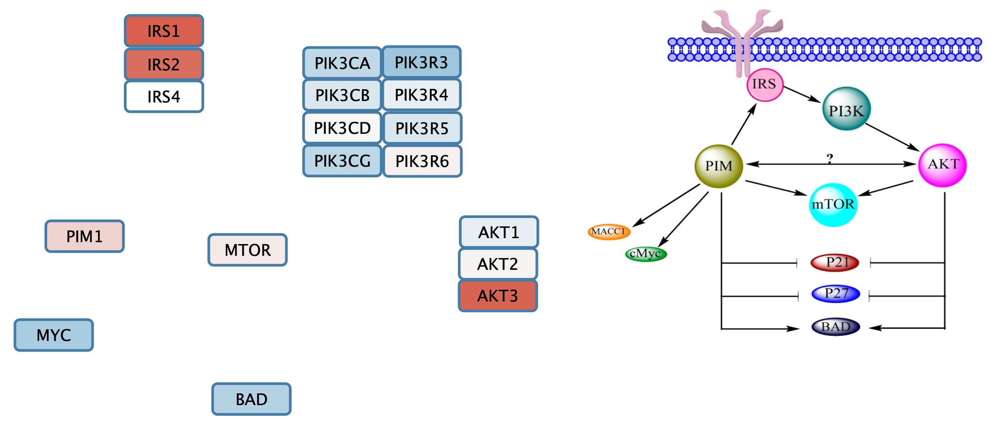
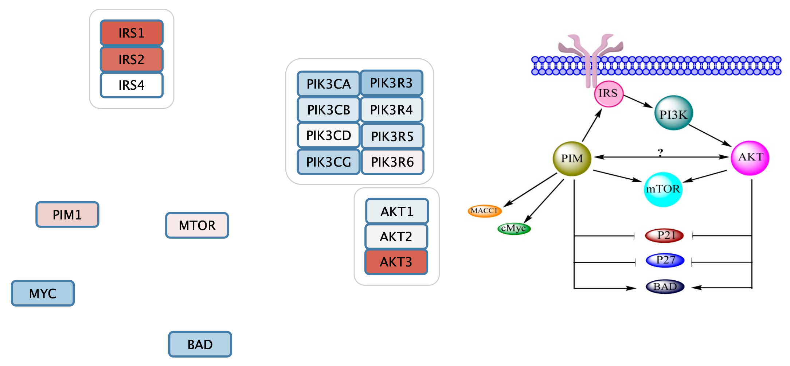
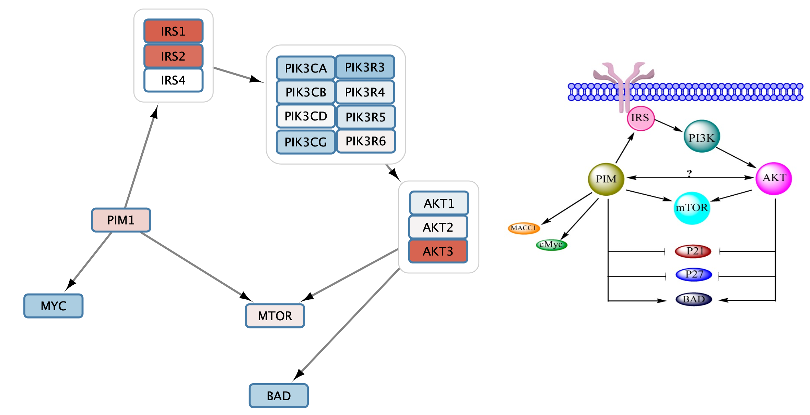
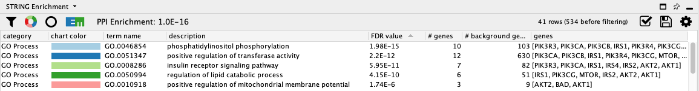
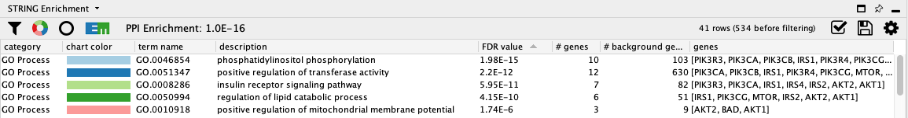

Pathway Figure Gene Set Analysis
Through a combination of optical character recognition, machine learning and manual curation, gene sets have been extracted from published pathway figures. 32,000 of these sets are available in NDEx, and can be used directly in Cytoscape.
This protocol describes how to visualize data on a gene set, create a network from it in two different ways, perform functional enrichment and include the original figure for comparison. The starting point for this kind of analysis is a list of gene sets found to be enriched in an experiment, through functional enrichment analysis against the full set of gene sets.

If you don't already have the stringApp installed, you can install it from the Cytoscape App Store or from Cytoscape via

Import Pathway Figure Gene Set
- Navigate to Published Pathway Figure Analysis Set at NDEx.
- In the
Network Name field, type in Possible interaction between PI3K/AKT/mTOR network and PIM in ovarian cancer to find the network by name. - Click on the network. The page will display the gene set on the left and the published figure they were extracted from on the right.
- Save the figure by right-clicking on it and selecting
Save Image As.. . - To open the gene set into Cytoscape, click the
Open in Cytoscape button in the lower right.
The gene set will appear as a grid of nodes in Cytoscape, similar to what it looks like at NDEx.

Data Integration and Visualization
Next, we will import experimental data from TCGA, comparing gene expression between two molecular subtypes of ovarian cancer (Mesenchymal and Immunoreactive). The data is annotated with NCBI Gene identifiers, which is also what the nodes in the gene set are annotated with.
- Download a local copy of TCGA-Ovarian-MesenvsImmuno_data.csv.
- Load the TCGA-Ovarian-MesenvsImmuno_data.csv file under
File menu, selectImport → Table from File.... . Alternatively, drag and drop the data file directly onto theNode Table . - Select the ncbigene column as the Key column for Network, to match the Gene column of the data.
- To complete the import, click
OK . Two new columns of data will be added to theNode Table .
Data Integration and Visualization
We can now add a simple visualization of the data on the set of nodes.
- In the
Style interface, underNode Fill Color , create a continuous mapping forlogFC , with the default ColorBrewer Red-Blue gradient. - Set the default node fill color to light gray.
- The gene set is already arranged with a grid layout, but we can make it a bit more compact. Under
Layout → Settings... , select theGrid Layout . - Set the
Vertical spacing between nodes to 50 andHorizontal spacing between nodes to 80.

Add Pathway Figure as Annotation
We can add the original published figure for this gene set as a Cytoscape annotation, to add context to the nodes.
- In the
Annotations tab of theControl Panel , select theImage icon at the top and then click anywhere in the network view to place the annotation. The initial placement can easily be changed later. - Select the pathway figure you downloaded previously in the file browser.
- Once the annotation is placed, enable annotation selection by clicking the
Toggle Annotation Selection button in the
in the Network View Tools under the network.

Manually Layout Gene Set Nodes
Next, we will arrange the gene set nodes and add interaction with the goal of reproducing the information from pathway figure in a computational model. We can start by moving the nodes into the approximate location from the figure. Note that the label displayed on the node, name, is the official gene symbol, whereas the original published figures sometimes use various gene symbol aliases. Use the symbol column to match nodes to the figure.
In this example, the original figure contained several complexes and isoform groups that were illustrated as single nodes. In the gene set these have been expanded to include all members of isoforms and complex subunits.
Add Group Nodes to the Gene Set
Cytoscape allows for grouping of nodes, which we can use to organize complexes and groups.
- Select the three IRS nodes by clicking and dragging.
- Right-click and in the context menu, select
Group → Group Selected Nodes . Enter IRS as the name of the group. - Repeat with the other complexes and groups, naming them PI3K and AKT respectively.
The gene set now includes three group nodes.
Add Interactions to the Gene Set
Once the nodes are grouped, we can add and style the interactiosn between them.
- Select the IRS and PI3K group nodes by clicking on the group node outline. The outline should be highlighted in yellow.
- Right-click to access the context menu. Select
Add → Edges Connecting Selected Nodes .
Style Interactions to the Gene Set
- Select one of the edges. In the
Style interface, select theEdge tab. - For
Target Arrow Shape , click on theBypass column and select an arrow. ClickApply . Note that it is sometimes not clear which node is the source vs target, so for some interactions you may need to edit theSource Arrow Shape . - Repeat this process to add all relevant interactions from the pathway figure to the gene set.
You may need to move the nodes around for optimal layout.
Retreiving Interactions from STRING
So far, we have worked with the gene set as nodes, without edges. Next, we will add known interactions to our nodes from the STRING database by quering the database for all nodes. This will enable further analysis options downstream.
- In the
Node Table , select the top entry in thename column, hold down the shift key and select the last entry. Copy the contents to the clipboard. - In the
Network tab of theContol Panel , select STRING protein query in the drop-down and paste in the contents of the clipboard. - Click the
More Options... button and change the
and change the Confidence score cutoff to 0.95.
Retreiving Interactions from STRING
The resulting network contains the nodes from our pathway gene set, and interactions between them with an evidence score of 0.95 or greater. Adding a force-directed layout, the network looks something like this:

Data Integration
Next, we can import the same experimental data from a TCGA dataset. The STRING network is annotated with protein identifiers, mainly Uniprot and Ensembl protein, while the data has NCBI Gene identifiers. So before importing the data we are going to use the ID Mapper functionality in Cytoscape to map the network to NCBI Gene.
- In the
Node Table , right-click on the column header of thedisplay name column and clickMap column... . - In the
ID Mapping interface, select Human asSpecies , HGNC asMap from and Entrez asTo . Click OK to continue. - IDMapper displays a report of how many identifiers were mapped. Make note of this information as it impacts all downstream analysis; If the mapping was unsuccessful, downstream analysis will be as well.
Data Integration
- Load the TCGA-Ovarian-MesenvsImmuno_data.csv file (downloaded earlier) under
File menu, selectImport → Table from File.... . Alternatively, drag and drop the data file directly onto theNode Table . - Select the new Entrez Gene column as the Key column for Network to match the Genecolumn of the data.
- To complete the import, click
OK . Two new columns of data will be added to theNode Table .
Visualization
Next, we will create a visualization of the imported data on the network. For more detailed information about how to create visualizations, see the Visualizing Data tutorial.
- In the
Style tab of theControl Panel , delete the mappings forImage/Chart 1 andImage/Chart 2 by clicking theDelete button for each. - Set the default node fill color to light gray.
- Set the default
Border Width to 2, and make the defaultBorder Paint dark gray. - For node
Fill Color , create a continuous mapping forlogFC , with the default ColorBrewer red-blue gradient.
Visualization
The network will now look something like this:

STRING Enrichment
The STRING app has built-in enrichment analysis functionality, which includes enrichment for GO Process, GO Component, GO Function, InterPro, KEGG Pathways, and PFAM.
- In the STRING tab of the
Results Panel , click theFunctional Enrichment button. Keep the default settings. - When the enrichment analysis is complete, a new tab titled
STRING Enrichment will open in theTable Panel .

STRING Enrichment
The STRING app includes several options for filtering and displaying the enrichment results. The features are all available at the top of the
- At the top left of the STRING enrichment tab, click the filter icon
 . Select
. Select GO Process and check theRemove redundant terms check-box. Then click OK. - Next, we will add a split donut chart to the nodes representing the top terms by clicking on
 .
.
STRING Enrichment
Not surprisingly, the top two terms are related to the signal transduction, specifically phosphatidylinositol phosphorylation, the enzymatic function of PI3Ks.
 

Add Pathway Figure as Annotation
Again, we can add the original published figure for this gene set as an annotation.
- In the
Annotations tab of theControl Panel , select theImage icon at the top and then click anywhere in the network view to place the annotation. - Select the pathway figure you downloaded previously.
- Once the annotation is placed, enable annotation selection by clicking the
Toggle Annotation Selection button in the Network View Tools under the network.
Retrieving interactions from INDRA
An alternative source for interactions for the PFOCR gene set is the INDRA database. INDRA contains interactions from multiple sources, with directional information. We will access the network from NDEx.
- In Cytoscape, select the original PFOCR node set imported from NDEx. In the
Node Table , select the top entry in thename column, hold down the shift key and select the last entry. Copy the contents to the clipboard. - Navigate to the INDRA database entry at NDEx. The network is very large, 79,000+ nodes, and will not be displayed at NDEx.
- In the lower left under the network, in the
Enter query terms field, paste the PFOCR nodes. - In the drop-down, change the type of search to Direct.
- Click the search icon to search. Because the network is large, the search will take some time.
Retrieving interactions from INDRA
- Once the subnetwork loads, click the
Download query result as CX button . - In Cytoscape, go to
File → Import → Network from File... and select the downloaded CX file. - The network will look similar to this:

Retrieving interactions from INDRA
Let's clean up the network a bit:
- To remove self-loops and duplicated edges, go to
Edit → Remove Self-Loops.... , selecting the newly created network. - Next, go to
Edit → Remove Duplicate Edges.... and again select the right network. Leave the two options unchecked. - Finally, delete the two unconnected nodes.

Data Integration
Next, we can import the same experimental data from a TCGA dataset. The INDRA network, and therefor our new subnetwork, is annotated with Gene symbols, while the data has NCBI Gene identifiers. So before importing the data we are going to use the ID Mapper functionality in Cytoscape to map the network to NCBI Gene.
- In the
Node Table , right-click on the column header of thename column and clickMap column... . - In the
ID Mapping interface, select Human asSpecies , HGNC asMap from and Entrez asTo . Click OK to continue. - IDMapper displays a report of how many identifiers were mapped. Make note of this information as it impacts all downstream analysis; If the mapping was unsuccessful, downstream analysis will be as well.
Data Integration
- Load the TCGA-Ovarian-MesenvsImmuno_data.csv file (downloaded earlier) under
File menu, selectImport → Table from File.... . Alternatively, drag and drop the data file directly onto theNode Table . - Select the new Entrez Gene column as the Key column for Network to match the Genecolumn of the data.
- To complete the import, click
OK . Two new columns of data will be added to theNode Table .
Visualization
Next, we will create a visualization of the imported data on the network. For more detailed information about how to create visualizations, see the Visualizing Data tutorial.
- Set the default
Border Width to 2, and make the defaultBorder Paint dark gray. - For node
Fill Color , create a continuous mapping forlogFC , with the default ColorBrewer red-blue gradient.
Visualization
We can also add visualization to the edges, since the INDRA database provides information on the type of interaction. We will use a combination of arrow heads and interaction color.
- Navigate to the
Edge tab of theStyle panel. - For
Target Arrow Shape create a Discrete mapping for type. This allows you to pick a different arrow head for each interaction type in the network. The selection is done by clicking on a particular entry, for example Activation, and selecting an arrow type in the popup.- For Activation, Modification and IncreaseAmount, select the Delta arrow head.
- For Inhibition, select the the T.
- For DecreaseAmount, select Cross Delta.
Visualization
- For the final interaction type, Complex, go to the
Stroke Color entry in the edge tab, and again create a Discrete mapping for type. Choose a green color for Complex, and leave the others blank.
Manual layout
We can manually arrange the nodes to match the layout of the original figure. To beging, we can import the figure as an annotation.
- In the
Annotations tab of theControl Panel , select theImage icon at the top and then click anywhere in the network view to place the annotation. - Select the pathway figure you downloaded previously.
- Once the annotation is placed, enable annotation selection by clicking the
Toggle Annotation Selection button in the Network View Tools under the network. - To mimic the layout, simple click and drag the nodes around to make the network look somethine like this:
Manual layout
Once we group the nodes, we can see that there is an extra Akt1 node. Since the gene name is not upper-cased (the convention for human), we can assume that this node is for a different species, in this case Drosophila.
- Delete the Akt1 node by selecting it and clicking the delete key.
Saving Results
You now have a cytoscape network representing the original pathway figure, that can be used for further analysis, to visualiza additional data and to create figures for presentations or publications. Cytoscape provides a number of ways to save results and visualizations:
- Save your results as a session file:
File → Save ,File → Save As... - Export as an image:
File → Export → Network to Image... - Export to the web:
File → Export → Network to Web Page... (Example) - Export to a public repository:
File → Export → Network to NDEx , orFile → Export → Collection to NDEx - As a graph format file:
File → Export → Network to File .
Formats:- CX JSON
- Cytoscape.js JSON
- GraphML
- PSI-MI
- XGMML
- SIF